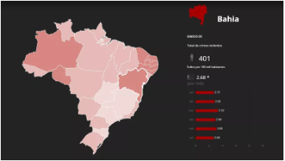
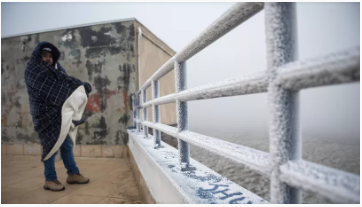
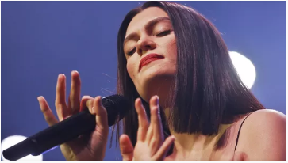
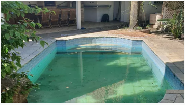
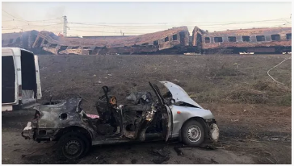
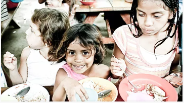
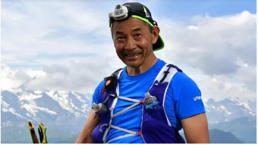
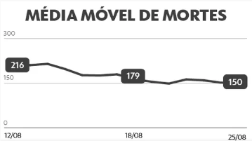
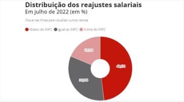
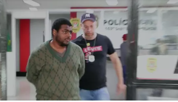

Monitor da Violência: Bahia registra maior quantidade de mortes violentas no primeiro semestre no Brasil
Nos seis primeiros meses deste ano, foram registradas 2.630 mortes violentas, contra 2.931 no primeiro semestre de 2021
Série com presidenciáveis
Jornal Nacional entrevista Lula hoje, às 20h30
'Envergonhada de ser brasileira'
Mulher negra que teve pescoço pisado por PM diz que se sente injustiçada com absolvição: 'Envergonhada de ser brasileira'
Questão de gênero
Filhos no trabalho: por que pais são elogiados e mães são repreendidas?
Para filósofa, sociedade vê mães e pais de forma diferente

image.png
Semana que vem terá nova onda de frio e chance de neve no sul
Previsão do tempo: País tem calor, umidade baixa, queimadas e chuva em áreas isoladas
Privacidade na internet
Como descobrir os dados que o Google salva sobre você?
Site permite revisar informações armazenadas por serviços como Gmail, YouTube e Maps

Canções e 'vibe boa'🎤
Jessie J vem pela 3ª vez ao Rock in Rio com pop para se sentir bem;
Como Måneskin virou maior aposta do rock e foi escolhida para tocar antes do Guns no Rock in Rio
Do BBB para a novela
Ex-BBBs na atuação: Jade Picon e Rafa Kalimann seguem caminho já trilhado por Grazi Massafera e mais sistersr
Relembre outras participantes do reality show que estrearam como atrizes após o programa.

Atraso em aluguel
Fotos mostram antes e depois de mansão onde morou o casal Belo e Gracyanne em SP.
Dono cobra R$ 483 mil do casal após despejo.
De olho no orçamento
Quanto custa a correção da tabela do Imposto de Renda prometida pelos candidatos?

Ofensiva russa
Número de mortos em ataque russo contra estação de trem na Ucrânia sobe para 25
Bombardeio aconteceu no dia da independência do país, na quarta-feira (24), quando a invasão da Rússia completou seis meses.
Eleições
g1 entrevista candidatos nos estados: veja agenda desta quinta-feira
As entrevistas terão transmissão ao vivo ou foram gravadas durante a semana. Candidatos também responderão a perguntas do público.
Rio de Janeiro
PF e MPRJ prendem 8 da milícia de Zinho por 'matança generalizada'; grupo é suspeito da morte de Jerominho
Apontado como fundador de milícia, Jerominho foi executado a tiros no início do mês.

Blog da Mariza Tavares
Eventos adversos na infância elevam o risco de morte precoce

Queda em montanha
Brasileiro que morreu ao cair de montanha em maratona na França era atleta experiente: 'Lenda das corridas', diz prima
Orlando Yamanaka caiu mais de 100 metros durante ultramaratona.
Decisão do STF
Moraes determina bloqueio de redes e contas bancárias da mulher de Daniel Silveira
Segundo ministro, deputado usou perfis de Paola para divulgar fake news.
Fora das redes
Luciano Hang, da Havan, tem perfis retidos no Twitter, Instagram, YouTube e TikTok
Decisão atende a ordem judicial. Empresário foi alvo de operação da PF por mensagens golpistas.
Cerimônia de posse
Ministra Maria Thereza de Assis Moura toma posse como nova presidente do Superior Tribunal de Justiça
Evento reuniu Bolsonaro e ministros do STF, entre eles Alexandre de Moraes.
Determinação do TSE
TSE diz que eleitor deve entregar celular antes de entrar na cabine de votação
Corte respondeu a consulta do União Brasil; conforme tribunal, celular não poderá estar guardado no bolso no ato da votação.

Números da pandemia
Média móvel de mortes por Covid cai em 20 estados e no DF
Vacinação: mais de 102 milhões receberam a dose de reforço
Pesquisa eleitoral
Ipec em Goiás: Caiado lidera com 48%, e Mendanha tem 21%
Corte respondeu a consulta do União Brasil; conforme tribunal, celular não poderá estar guardado no bolso no ato da votação.
Justiça finalmente
Após 14 anos, vigilante condenado injustamente é inocentado
Guerra na Ucrânia
Ocupada pela Rússia, usina nuclear de Zaporizhzhia é desconectada da rede elétrica
Lados se acusam de bombardear a central, que conta com seis reatores.
Ocasião excepcional
Mulheres assistem a jogo de futebol do Campeonato Iraniano depois de 40 anos
Investigação da PF
Áudio mostra presidente da Funai oferecendo apoio a servidor preso
Jussielson Silva foi detido por arrendar terras indígenas em Mato Grosso. Ouça diálogo.

Trabalho e Carreira
Quase metade dos reajustes salariais em julho perdeu da inflação

Programas maliciosos
'Golpe da mão fantasma' invade celular e esvazia conta; entenda
Como descobrir os dados que o Google salva sobre você
Falta pouco!
Rock in Rio terá cão-robô e mais de 130 câmeras de segurança
200 t e 10 andares de altura: veja curiosidades do Palco Mundo

Mudança na programação
Jota Quest vai substituir o trio de hip hop Migos no Rock in Rio
Gigante gasoso
Supertelescópio James Webb faz descoberta inédita em exoplaneta
200 t e 10 andares de altura: veja curiosidades do Palco Mundo
Promoção falsa
Golpe no WhatsApp usa álbum da Copa para roubar dados
Rio de Janeiro
Polícia prende suspeito de matar homem que fez novela 'Barriga de aluguel'
Bruno Moreira trabalhava como motorista de aplicativo quando foi baleado.
Faça sua inscrição
g1 no Telegram: veja como receber as principais notícias

Rio de Janeiro
Hugo & Guilherme na Festa do Peão de Barretos 2022; FOTOS
Goianos que estouraram com "Haja Colírio" e "Mal Feito", que foi gravada com a rainha da sofrência, Marília Mendonça, fizeram show na madrugada desta sexta-feira (26).
Biden critica republicanos apoiadores de Trump antes de comício: "É quase semifascismo", afirma
Em evento de arrecadação de fundos realizado na quinta-feira (25), o presidente dos Estados Unidos criticou grupos que apoiam seu antecessor, acusando-os de aderir à violência e ao ódio.
Lula no JN: 'Aquele MST de 30 anos atrás não existe mais'; trecho
Lula (PT) foi o terceiro candidato a participar da série de entrevistas do Jornal Nacional com os presidenciáveis. Antes dele, vieram Jair Bolsonaro (PL), nesta segunda-feira (22), e Ciro Gomes (PDT), nesta terça-feira (23). A última entrevista será com Simone Tebet (MDB), nesta sexta-feira (26).
Estagiária da Marinha acusa colega de trabalho de racismo: 'Você é preta'
Marcelle Silva Santos, de 22 anos, prestou queixa da Delegacia de Crimes Raciais. Nos dois episódios, havia testemunhas. Colega foi advertida verbalmente pela Marinha.
Guns, Justin Bieber, Dua Lipa, Demi Lovato: o que esperar dos shows...

Homem é preso por importunação sexual dentro de ônibus na Zona Sul de SP
Suspeito atacou duas mulheres na manhã desta quinta-feira (25). Em 2015, ele já tinha sido preso por abuso sexual dentro de vagão do Metrô.
Nova decisão suspende prisão domiciliar de Isaías do Borel
Suspensão ainda será julgado pelos demais desembargadores da 3ª Câmara Criminal do Tribunal de Justiça do Rio.

Rock in Rio 2022 terá experiência Metaverso para quem não puder ir ao festival
Chamada de Rock in Verse, a plataforma é feita dentro do Fortnite, tem trilha sonora exclusiva e funcionará depois do fim do RiR.

Acidente em SP
Pai de ator de 'Pantanal' detalha acidente que deixou filho ferido
Vídeo mostra momentos antes de acidente com ator
Rock in Rio 2022 terá experiência Metaverso para quem não puder ir ao festival
Chamada de Rock in Verse, a plataforma é feita dentro do Fortnite, tem trilha sonora exclusiva e funcionará depois do fim do RiR.
Lula no JN: 'Aquele MST de 30 anos atrás não existe mais'; trecho
Lula (PT) foi o terceiro candidato a participar da série de entrevistas do Jornal Nacional com os presidenciáveis. Antes dele, vieram Jair Bolsonaro (PL), nesta segunda-feira (22), e Ciro Gomes (PDT), nesta terça-feira (23). A última entrevista será com Simone Tebet (MDB), nesta sexta-feira (26).
Questão de gênero
Filhos no trabalho: por que pais são elogiados e mães são repreendidas?
Para filósofa, sociedade vê mães e pais de forma diferente
Veja mais
Viu isso aqui
Mais recomandados
Mais Lidas
Rock in Rio 🎸🤘
Mais Rock in Rio
Deu o que falar...

g1 explica
Mais g1 explica
Números da pandemia

Entrevistas do JN
Mais Jornal Nacional
Blogs do g1
Andréia Sadi
Bolsonaro e Lula vão atrás de eleitores de Ciro
Blog da Ana Flor
Moro pede a Guedes para gravar vídeo de apoio

Mais blogs
Adeus à rainha
Mais Elizabeth II
🎧 Ouça no g1